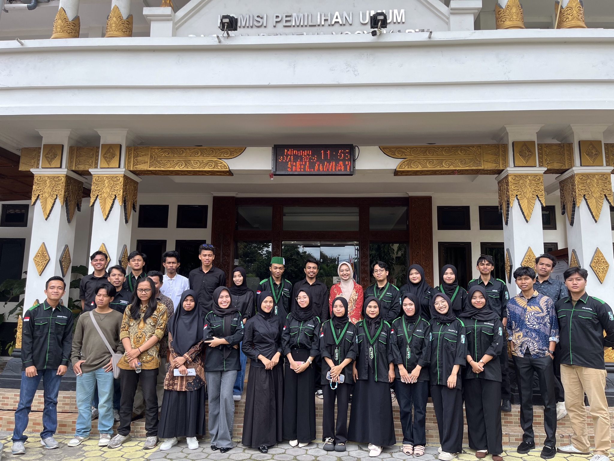
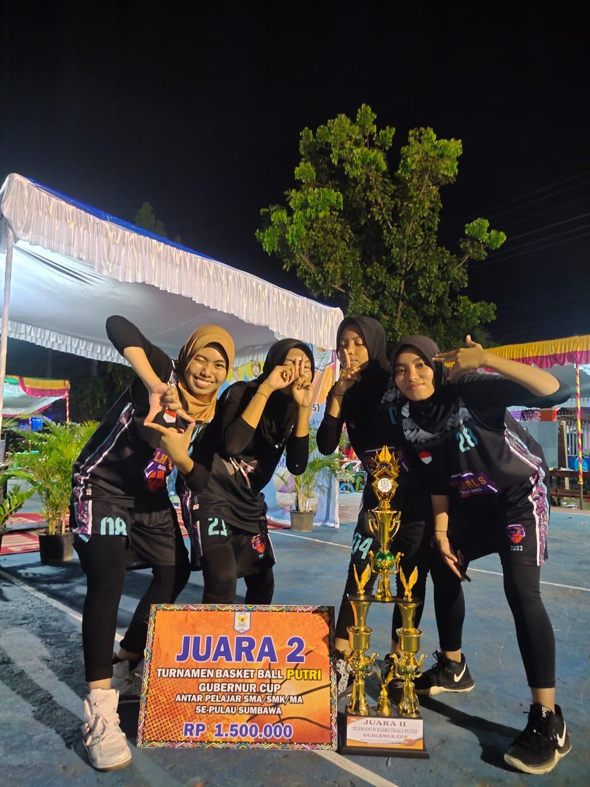
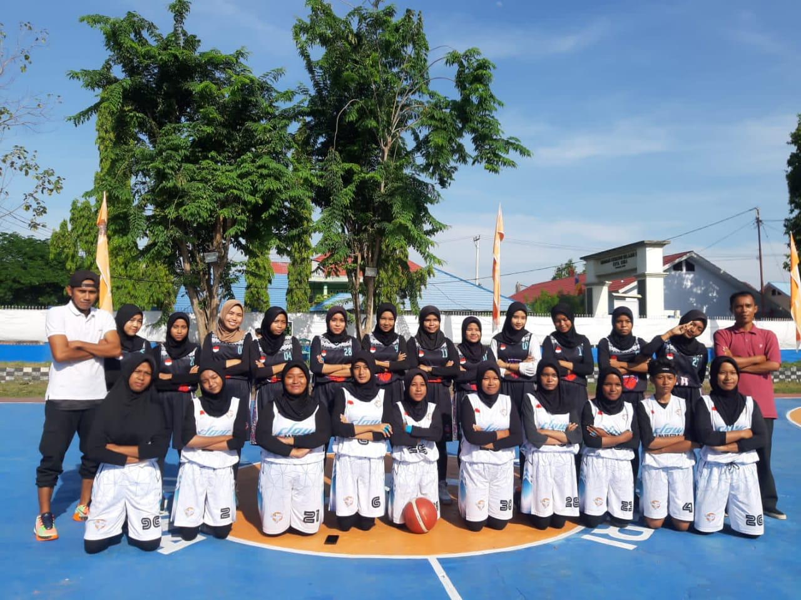

Wulandari
Mahasiswa Informatika
Mahasiswa Informatika

Email: wulan@email.com
Instagram: @wlaan_drr
2024
sebelum menjadi mahasiswa Universitas mecubuana Yogyakarta, saya pernah bekerja di BUMN Bank Mekar dan posisi sabai Account Officer (AO),atau bagian dari tim operasional, membantu dalam pelayanan dan administrasi nasabah.

2023
Saya akan menceritakan pengalaman kerja saya. Pada bulan Mei 2023, tepat setelah hari kelulusan, saya mulai bekerja sebagai model di butik Niaso Women Fashion yang berlokasi di Kota Bima. Saya bekerja di posisi tersebut selama kurang lebih 4 bulan. Selama bekerja sebagai model, saya bertanggung jawab untuk melakukan sesi pemotretan produk, membuat video review untuk produk-produk baru yang datang, serta membantu dalam pembuatan konten promosi butik. Setelah 3 bulan, saya dipindahkan ke cabang lain dan dipercaya untuk mengisi posisi sebagai admin butik. Dalam peran ini, saya bertanggung jawab untuk mengelola promosi produk, menyusun jadwal Brand Ambassador (BA) yang telah bekerja sama, serta mengatur dan menampilkan konten review. Selain itu, saya juga menangani persiapan barang untuk pengiriman, baik ke luar kota maupun dalam daerah..
2025 - Sekarang
Bidang Kewirausahaan dan Pengembangan Profesi (KPP)
Aktif sebagai pengurus yang berfokus pada pengembangan kewirausahaan dan profesionalisme anggota. Berperan dalam meningkatkan keterampilan anggota agar siap bersaing di dunia kerja serta mendorong kemandirian ekonomi.


Saya memiliki hobi bermain basket yang mulai saya tekuni sejak awal masuk SMA pada tahun 2020. Selama aktif di kegiatan tersebut, saya telah mengikuti berbagai event pertandingan, baik tingkat lokal maupun regional. Saya pernah mengikuti event tingkat Pulau Sumbawa dan berhasil meraih juara 2. Selain itu, untuk event antar sekolah di Kota Bima, tim saya secara konsisten meraih juara 1. Saya juga aktif mengikuti kegiatan sparing atau latihan tanding dengan berbagai sekolah, seperti SMA, SMK, dan MAN. Melalui pengalaman ini, saya tidak hanya mengembangkan kemampuan dalam olahraga basket, tetapi juga melatih kerja sama tim, disiplin, dan sportivitas.

